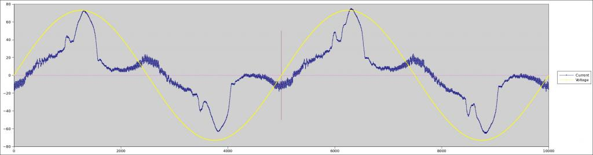
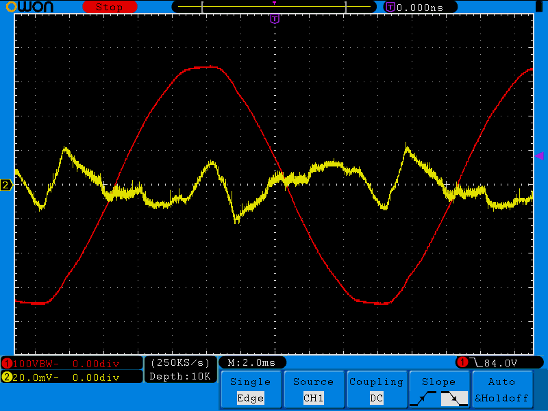
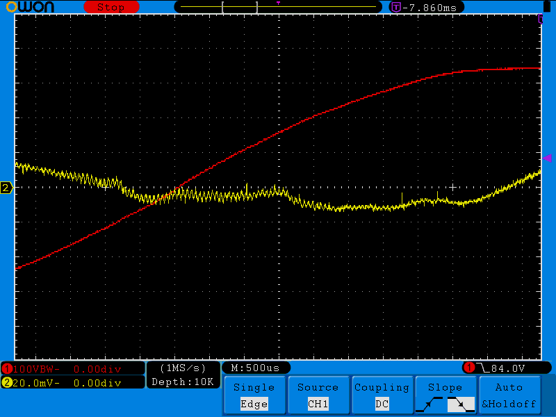
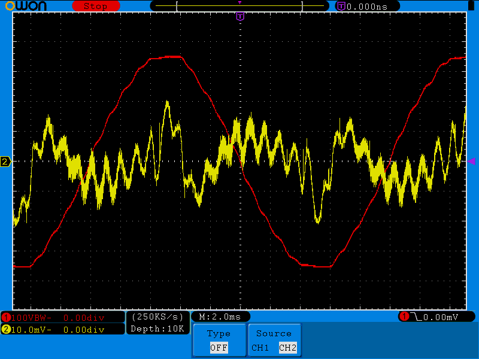

what is the best method to find out if you importing or exporting from the grid with PV
David
Archived Forum |
|
importing or exportingSubmitted by David_1 on Wed, 25/02/2015 - 09:44what is the best method to find out if you importing or exporting from the grid with PV
David » |
Re: importing or exporting
Measure real power. When you know the relationship between voltage and current, you know the direction of power flow.
Re: importing or exporting
so just measuring phase is not enough ?
Re: importing or exporting
"the relationship between voltage and current" IS phase. But there are sketches that give you real power, and the sign of that is what you are asking for.
Re: importing or exporting
If you're asking whether just knowing the phase angle between V and I is sufficient, then in theory yes provided you're dealing with nice sine waves. Once that angle is greater than 90° (in either direction), you're exporting. In practice though, the current signal won't be a sine wave so then it gets trickier. In the example below how would you decide what their phase difference is?

Re: importing or exporting
well I suppose that is really what I am asking.. how do you do it ?
Re: importing or exporting
As Robert says, you pretty much have to calculate Real Power, and see whether that comes out positive or negative. There's a whole bunch more here: http://openenergymonitor.org/emon/buildingblocks/ac-power-introduction
[EDIT] Actually, I think I just found a problem with that page. It claims that with non-linear loads
the relationship (Apparent Power)2 = (Real Power)2 + (Reactive Power)2 is still correct,
I don't think that's true. According to the IEEE (and even to the paper referenced just a few lines below that statement) once you have non-linear loads (i.e. harmonics in the current signal), much of the "reactive power" is actually defined to be Distortion Power.
Re: importing or exporting
IEEE is American.
Re: importing or exporting
:-) I have to acknowledge Robert's, somewhat, terse reply. It's made me smile. Still am.
It might come across to some as a little curmudgeonly, although factually right of course.
Ours, has in my 40 years of engineering changed its name a few times??? When I joined it was the IEE, now I think it's IET.
But anyway, that made me smile.
Re: importing or exporting
but if I have a zero crossing detector can I not see from there the phase ?
Re: importing or exporting
If you have more than two zero crossings per cycle, as you very nearly have in dBC's waveform, then what?
[Completely off-topic to Simon: It is indeed now the IET, though by a petition to the Lords of Her Majesty's Most Excellent Privy Council ( ! ), I'm still allowed to use "MIEE" and "Chartered Electrical Engineer". In case you are wondering, I know because I was a Centre/Branch Hon.Sec when it happened!]
Re: importing or exporting
It's when you Brits and Americans can't agree on how big a gallon is that we smaller Anglo-Saxon countries go all French and adopt metric. I wonder how the French define reactive power. The IEEE have been having regrets about going with Budeanu's definition since at least as early as 1987 (http://www.lsczar.info/doc/31%20What%20is%20Wrong.pdf), but as far as I can tell it's always settled on "it's too hard to change now". The Budeanu definition has been built into silicon in lots of power meters.
There's an interesting comparison of the 7 most popular definitions of reactive power here: http://journal.esrgroups.org/jes/papers/9_3_5.pdf
Perhaps at least a footnote in that building blocks page would be appropriate, highlighting there is no world wide consensus on how to define reactive power in non-sinusoidal conditions. As it stands now the text is inconsistent with the reference (presumably American) sited just a few lines below it. And Table 1 in that 7-way comparison above shows that only in 1 of the 7 definitions (Fryze), does S2 = P2 + Q2.
Re: importing or exporting
The part being questioned reads:
"We can still calculate power factor from the following equation:
Power Factor = Real Power / Apparent Power
and the relationship
(Apparent Power)2 = (Real Power)2 + (Reactive Power)2
is still correct, but power factor = cosΦ would not be correct, higher order harmonics would need to be added."
Would you be happy with
"We can still calculate power factor from the following equation:
Power Factor = Real Power / Apparent Power
but the relationship
(Apparent Power)2 = (Real Power)2 + (Reactive Power)2
which is true for pure sine waves is no longer correct, neither is power factor = cosΦ, since the effects of higher order harmonics in both voltage and current waves must be considered."
Re: importing or exporting
Looks great, thanks.
Re: importing or exporting
Done.
Re: importing or exporting
It's when you Brits and Americans can't agree on how big a gallon is that we smaller Anglo-Saxon countries go all French and adopt metric.
Got a good chuckle out of that.
I can't speak to the British system (I'm American) but you've got THAT right! (America's got one messed up measurement/standards system!)
Re: importing or exporting
The more I look, it seems the phase change follows the import/export pattern. Yes I have seen poor wave forms but as the sun comes out more they change into a nicer sine wave.
I must be missing something. has anyone made an inport export device that works,who would have the time to chat to me on the phone ?
David
Re: importing or exporting
Can you clarify what you mean by "an inport [sic] export device", and why do you think measuring real power, which is what your electricity bill is based on (for domestic consumers in the UK at least), does not meet that requirement?
[ BTW, why the false email address in your profile? ]
Re: importing or exporting
dont think its false.. but will check if I misspelt it.. might explain why I had trouble registering !
edit :- I use my hotmail account on here but managed to spell it hotmial
so thanks for pointing that out, but can you see my email address ?????
Re: importing or exporting
"hotmial" - I could not see how you could register, so thought you had changed it after to prevent spam - which we don't do anyway.
Re: importing or exporting
I had help from Glyn :)
Re: importing or exporting
but as the sun comes out more they change into a nicer sine wave.
I think that's to be expected as your inverter will only generate Real Power, and probably quite big numbers compared to your Distortion Power. The Distortion Power will still be there, it just gets swamped by the much bigger numbers from the inverter output.
There's a much quoted motto in these parts that your big loads will mostly be resistive. In a residential environment, I think that's pretty true, but not so much in an industrial environment. So when you've got your inverter pumping out 3kWs worth of pure in-phase sine wave, and big heating elements coming on/off that flip you either side of the import/export boundary (well away from the boundary) then your phase angle measurement should do the trick for determining import Vs export.
Where it gets much more interesting is when the PV output naturally matches the power consumption, i.e. right at the import/export boundary. At my house that typically happens at least twice a day (dawn and dusk) and if the clouds are just right, then countless times during the day. Under those conditions, the inverter is supplying all the Real Power the house needs (but only the Real Power). But as the clouds change ever so slightly, or as I start a compute intensive task running on my desktop computer, I'll be moving around either side of that boundary. Let's say I'm bouncing +/- 50W either side of balance. Detecting and indicating that accurately takes a lot of precision.
In those conditions, instead of the Distortion Power and Reactive Power being swamped by the Real Power, it's now the other way around. The Real Power is tiny compared to the Distortion Power. When it is perfectly balanced, there is only Distortion Power and Reactive Power passing through the meter and the whole-house PF goes to 0. The inverter is providing all the Real Power requirements, and leaving the grid to supply the Reactive and Distortion Power components. As it moves slightly out of balance, you're trying to determine where you are in that +/-50W range of Real Power, but almost all the signal you'll be measuring will be Distortion Power. If you put a scope on it, you'd be flat out seeing even a hint of a sine wave. Depending on what I have switched on, in my house my Distortion Power is usually at least 120VAR, 24x7.
Re: importing or exporting
Don't worry, your email address is safe. I'm one of the moderators here. Only we, Glyn & Trystan can see it.
I'm still struggling to understand your concerns. We have well-proven techniques to measure real power, and we have two proven designs of energy diverter that control a heating load so as to optimize your use of you own generated power (assuming of course that you do generate and export), so I'm wondering why you are so concerned about phase - which gets less and less meaningful as the wave shape departs further from a true sine wave.
Re: importing or exporting
im not in the habit of reposting private emails but I dont think Robert will mind if I quote him selectively
"But if you need to divert your excess PV, you can either build it yourself, starting at http://openenergymonitor.org/emon/Choosing%20an%20Energy%20Diverter, or you can buy the Mk 2 either as a kit or assembled and tested from Robin (his website www.mk2pvrouter.co.uk/)
Both Robin's and Martin's are proven designs, so if you're not sure of what you're doing they are the best way."
one issue I have with their designs is I write Pic code, and dont want to jump ship just yet. I came to this forum looking for a simple answer, But I now see AC power is a little more complex than I first thought :)
so my next plan is to build a transformer based voltage circuit
http://openenergymonitor.org/emon/buildingblocks/measuring-voltage-with-...
has anyone tried to use the same transformer to power their circuit at the same time, I understand the load of your own circuit would affect the reading ?
Many Thanks
David
Re: importing or exporting
It's been discussed many times in the forum in the past, and rather than going through the same discussions again, you may wish to search through the forum and see what has been discussed before.
Re: importing or exporting
I did look, and will look again now. Thanks
edit :- any clue on what to put in search box ?
Re: importing or exporting
The emonTx V3 (all versions) uses the ac adapter as the (limited) power source. Robin uses a transformer with two secondaries. Also, read the introduction to energy diversion.
Re: importing or exporting
well Thanks all, it seems if you take 32 measurements over 10uS in the correct phase its easy to work out which way the power is going.
Re: importing or exporting
I think you will need to measure for a little longer than 10 μS in order to determine the direction of power flow. I'd suggest 50 measurements over 20 mS as a good starting point.
Re: importing or exporting
im always getting time wrong... yes I meant 10 ms half a cycle :)
thanks for pointing it out
Re: importing or exporting
I think you will need to measure for a little longer than 10 μS in order to determine the direction of power flow. I'd suggest 50 measurements over 20 mS as a good starting point.
Yes, if you repeatedly measure V and I at the supply point, and sum all the V*I products during a whole mains cycle, that will tell you how the energy state of the premises has changed. The sign of the calculated value tells you whether energy is being imported or exported.
Re: importing or exporting
well ive sort of done that I start at zerocrossing and take 32 samples over 10mS, so that would equate to 64 over 20mS. But I am only learning so any advice is welcome. Not yet tried measuring voltage so can not yet do V*I this is plan B :)
Re: importing or exporting
I suggest you look at the source files for emonLib. I appreciate that you want to use a PIC, the method you use to implement the algorithms will be different but the algorithms will still work for you. There are plenty of comments in the code, if you need them you should find deeper explanations in Building Blocks. But do bear in mind that the code snippets in Building Blocks are there to illustrate the point, they work but they're not necessarily optimal nor fully engineered, so emonLib and the example sketches on Github are the sources of known good working code.
Re: importing or exporting
Not yet tried measuring voltage so can not yet do V*I this is plan B :)
Unless you monitor your voltage, you will have no way of finding out whether the current at the supply point is in- phase with the voltage (when importing) or out-of-phase (when exporting).
I've just resurrected a feature which checks the energy state every mains cycle and activates an LED if there is any increase. When no current is flowing on a test rig, the LED flashes rapidly on and off because of the small amount of random noise in the system. But with a 40W bulb active, the LED remains firmly off because the energy state is dropping at 40 J/s.
There's a similar feature in several of my Mk2 PV Router sketches, as shown in the final column of Robert's table here. To follow the logic, you could search for "surplusPV_LED" in the sketch Mk2i_PV_Router_rev5e.ino. There is a link to that sketch on my Summary Page.
Re: importing or exporting
my zero crossing circuit only shows half the phase,so
ZEROCROSS_LOOP
LFSR FSR0, H'10'
BTFSS ZCROSS ;
GOTO $-1 ;WAIT FOR ZEROCROSSING
;BUT IT WILL COME TOO EARLY
NOP ;DELAY TO BRING FORWARD ZERO CROSSING POINT
CALL Delay400uS ; SMALL DELAY TO SYNC SWITCH ON
BSF AMBER ; Turn On LED
so at the point I turn the Amber led, I am always in the same place in the phase, if the phase is going positive and the current is also positive,I seem to be exporting lecy. There is more code that turns on or off a green led it follows(well leads) the red light on my meter. The meter light seems to lag by a few seconds where my pcb green led is being tested on every half cycle. I have no clue on voltages or even correct current value this still needs to be done.
Re: importing or exporting
Just got around to digging out clamp meter.
with a 40 watt bulb I cant detect it there unless I put two turns on the CT
two turns on the clamp meter measures 0.35 amps
one turn measures 0.17 amps
its late now I wont put a high load on until tomorrow but I am quite pleased with results so far....
I am sure I am just repeating whats been done on here years ago. :)
Re: importing or exporting
Here's a real life pic that might help explain the challenges. RED is voltage, and YELLOW is whole-house current (the output of a 50A->333mV CT wrapped around the house feed). RMS current at the time was about 1.65A. and RMS V was about 253V. The PV was putting out about 1.5kW, but bouncing around +/- 300W due to clouds. The house was using about 1.5kW. So, is it import or is it export?
If you start at the first V zero-crossing, I is hovering around zero, about 1.5msecs later I starts heading away from V so you think EXPORT. But at about 5msecs past the V zero-crossing, I flips over towards V, so you think IMPORT. So your next approach might be to look at how long I stays on the other side of zero from V. I is clearly spending more time on the wrong side of zero, so you think EXPORT. But, in this example, the time it spends on the correct side of zero is much more important, because it's happening when V is large. Power is V*I so where V is near its peak it really matters what I is doing. Without adding up all those V*I calculations, it really is impossible to tell which side of the ledger you're going to land on.


Re: importing or exporting
I happened to capture one with the 1050Hz AFLC (aka ripple controller) signal the grid manager users to remotely control peak demand. I'd previously captured it on V, but this is the first time I've seen the spectacular effect it has on I. I bet the PV inverter had lots of fun trying to track that. I'm not sure if they still use big-iron like this: http://www.dailymotion.com/video/xrbven_30kw-50-hz-motor-injecting-1050-hz-ripple_tech to inject those signals, but it's exciting to think they might.

Re: importing or exporting
@dbc
I confess your post has confused me a little, I 100% understand the little peak @5mS is also at the same point as the highest voltage. my confusion comes past the second zero crossing point. Are you saying all of the current shown in yellow above and opposite V is Export and the same peak at about 5mS is import ?
many thanks
David
Re: importing or exporting
my confusion comes past the second zero crossing point
There are too many zero-crossings there for me to decode that. Are you talking V zero-crossing, or I zero-crossings? It would have helped if I'd lined up the picture better so that the V zero-crossing went through the origin, then we could better use the x-axis ticks as a reference.
Whenever V and I are on the same side of the x-axis, I'm importing, whenever they're on opposite sides, I'm exporting. So in the first (positive) V half-cycle, I'm importing during that small yellow triangle that lines up roughly with the V peak, and mostly exporting the rest of the time. In the second (negative) V half-cycle it's pretty much identical... I'm importing during that small yellow triangle that lines up roughly with the V peak.
I use +ve power to indicate importing, and -ve to indicate exporting. Power = V*I, so when V and I are both positive, or when V and I are both negative, their product is positive, and I'm importing. When either of them is on the other side of the x-axis from the other, their product is negative and I'm exporting.
Re: importing or exporting
"Importing" and "exporting" are macro terms as used by energy suppliers. When the flow of energy is analysed in too much detail, these terms start to lose their meaning.
If a supply meter shows that equal amounts of energy have been imported and exported during a certain period, that presumably means that the overall net flow of energy has been zero. The fact that the meter has broken it down into equal amounts of import and export implies that some limits are being applied to the calculation.
In the UK, many meters have a range of 1 WattHour (3600 Joules) within which the flow of energy is not recorded by the meter. While the energy state remains within this zone, any small fluctuations are permitted without penalty. This is the "sweet zone" that my Mk2 PV Router operates within.
In the Router's "normal" mode, the load is applied as necessary so as to keep the overall energy state within as small a range as possible. In practice, the energy excursions will cover a range of around 100 Joules. In "anti-flicker" mode, more of the permitted range is used so that the cycle rate can be reduced. Technically speaking, the system will then be "importing" and "exporting" for a few cycles at a time, but the meter will not register either of these activities as they lie within its permitted zone.
A perfectly set up phase-angle diverter will "export" for the first part of each half-cycle of the mains and then "import" for the second half. With the overall flow of energy being zero, I would hope that this behaviour would be acceptable to all types of supply meter. Unfortunately, phase-angle diversion of surplus power brings other complications that burst-mode diversion avoids.
Re: importing or exporting
"Importing" and "exporting" are macro terms as used by energy suppliers. When the flow of energy is analysed in too much detail, these terms start to lose their meaning.
Yes, I didn't mean to imply the meter is counting things as forward and backwards at that level of detail. My point was you have to process an entire cycle before you can decide at that instant whether you're importing or exporting. If you just look at a zero-crossing (which I think is what David_1 was hoping to get away with) it's way too early to tell.
At the end of one full cycle, you do actually know whether you're importing or exporting. Whether or not your meter flips things around that quickly is another issue again... and where your sweet zone comes into play. This capture from a very old thread shows just how quickly they can turn it around if they want to. 37.6msecs after the energy reversed, the IC declared it via its IRQ signal (yellow).
Re: importing or exporting
just to be clear at present I am using the zero crossing of the the volts, well I wait till it goes from negative to positive, so I always start at the same point in phase with volts climbing and falling before going negative.
so in this half cycle I take 32 equally spaced measurements.
Re: importing or exporting
so in this half cycle I take 32 equally spaced measurements.
Measurements of what? Actually, what is it you're trying to build? What's the end-goal?
Re: importing or exporting
the end goal is to divert the spare unused generated power into a resistive load. pv to water heater :)
but I suppose my real quest is to understand more about AC...
Re: importing or exporting
OK, well calypso_rae knows more about that than anyone. Hopefully the scope traces above demonstrate why you can't just look at current alone.
Re: importing or exporting
I think this thread now contains all the answers I need, your traces helped alot. so did everyone else. my back ground is not in electronics so sometimes I need to ask the same question over and over :)
Re: importing or exporting
calypso_rae knows more about that than anyone.
Sure, calypso_rae has spent much of his last couple of years immersed in all this stuff, but other people's input is always helpful. That's what this forum is all about.
I would hope that either my Mk2 Router design , or Martin's PLL equivalent , together with Robert's introductory section choosing an energy diverter would be sufficient without the need to re-invent anything.
Re: importing or exporting
has anything been re-invented then... ? sorry if I have been a bit slow to understand but wil not everyone new who comes along want to understand how these things work ? unless this is just a shop selling boxes, my version of open is different to yours..
Re: importing or exporting
...unless this is just a shop selling boxes, my version of open is different to yours...
There are 49 posts in this thread, mostly from who I would class as 'expert' contributors, who have patiently tried to address your questions, provided screenshots and links to other information. Just how much forum support would you need to match your version of 'open'?
Your last post is a little rude and not warranted.
Paul - Moderator
Re: importing or exporting
would be sufficient without the need to re-invent anything.
Re: importing or exporting
David,
There is a distinction between OpenEnergyMonitor and Megni. The first is a community website, the second is a supplier of components. The commonality is that both are run by the same two individuals, both are committed to energy monitoring, and both support each other. The "boxes" - as you put it - are open source, so too is all the information on this website and the associated locations, Github and the Wiki for example. You, and anyone else in the world who understands English or who can have a translation done, is free to peruse and use the information that is freely provided, largely by the goodwill of the community here.
If you want to understand how things work, you need to read and understand that information. It might be a little difficult to locate some things, but I am reasonably confident that there is enough published here for you to attain your goals, or at least enough of "... to understand more about AC" to be able to achieve "the end goal [which] is to divert the spare unused generated power into a resistive load. pv to water heater".
My fear is that until now, you've probably thought that everything in electrical power is the nice well-behaved sine waves that you see in textbooks and web pages. As dBC's pictures show, in real life they can be anything but; and what you design has to be robust enough to be able to cope with stuff like that.
So, if you want to construct a PIC-based energy diverter, here is my advice:
Read through the articles here on energy diversion, but at this stage pay attention to the principles, not the details. Read MartinR's and Robin's posts on the subject. Read through the Building Blocks articles about electrical theory, sensors & input circuits, filters and energy meters.
Go back and read about energy diversion again, and how Martin's and Robin's designs work. You will now understand much more on the second reading.
Then I suggest you should choose and follow one of the published sketches and port that to your PIC. That way, I think you will take and build on a proven design, so any problems you encounter will be in your implementation, rather than fundamental ones relating to basic principles.
Re: importing or exporting
Many thanks.. :)
Re: importing or exporting
I've just posted a video showing some of these principles at:
http://youtu.be/TVKD_0p5iNw
Re: importing or exporting
In the video, I demonstrated that the movement of a screwdriver near the CT can influence the readings. I had not considered that this particular screwdriver may be slightly magnetised, as are most others it seems. The movement of a non-magnetic item is not detected by the CT.
Thanks, Robert, for pointing this out.
Re: importing or exporting
I'd forgotten about this. Jeremy Harris's PIC version is at: http://openenergymonitor.org/emon/node/2429#comment-13903